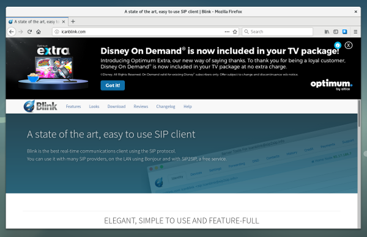

PSA: Optimum Online is MITMing their Customers

I got an unpleasant surprise this morning while visiting the website of my favorite free softphone SIP client. That advert up there did not come from http://icanblink.com/: it was injected, in-transit, by my ISP.
Why is it so hard to get proper, unmolested Internet service? All I want is something that shuttles my packets about and minds its own damn business when it comes to what’s in those packets. But no, the industry just keeps screwing around, exploiting the weaknesses in my technology and psychology – as modern advertising is wont to do – all while I’m paying them for service.
It worries me that most of Optimum’s customer base has little choice but to put up with this or hope that the opt-out sticks. I know how to defend myself – PrivateInternetAccess has a new subscriber today – but that’s only because my line of work leads me to know such things. It takes great technical skill to use the Internet without losing your dignity, and that’s not right.